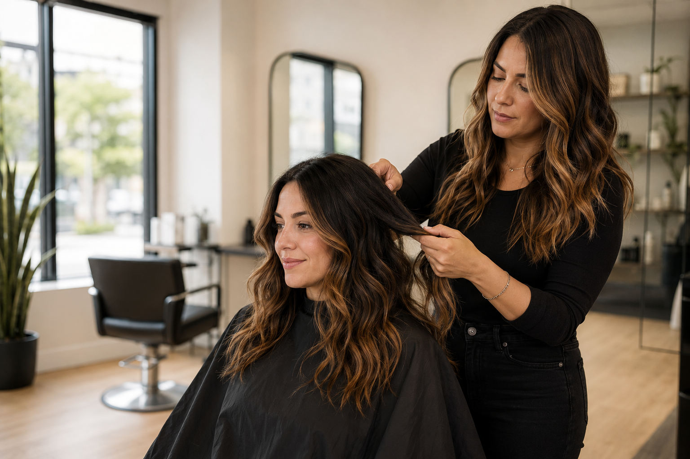
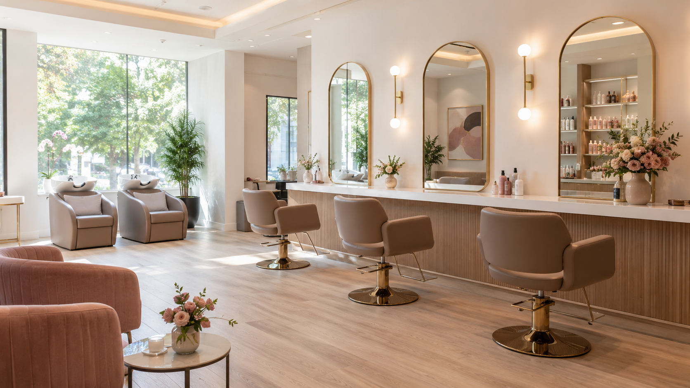
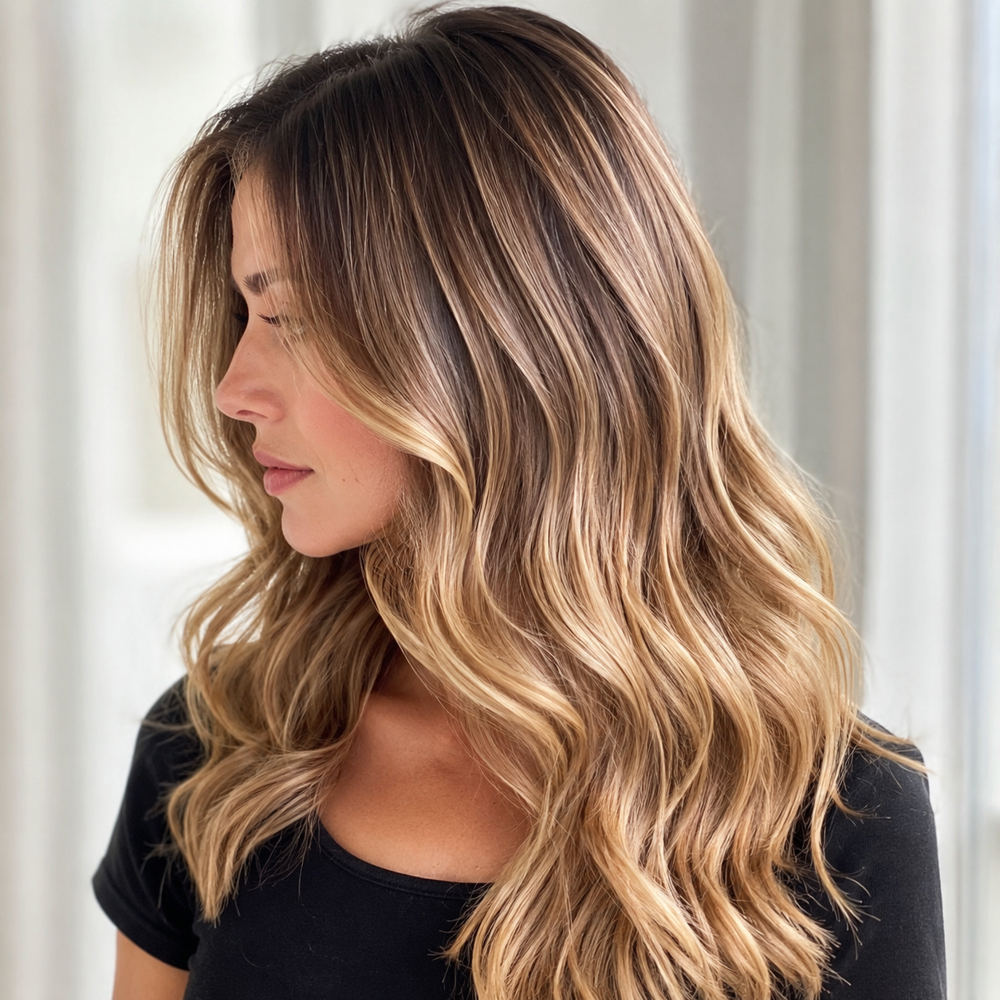
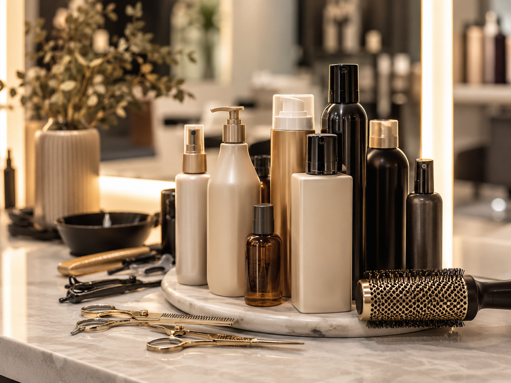
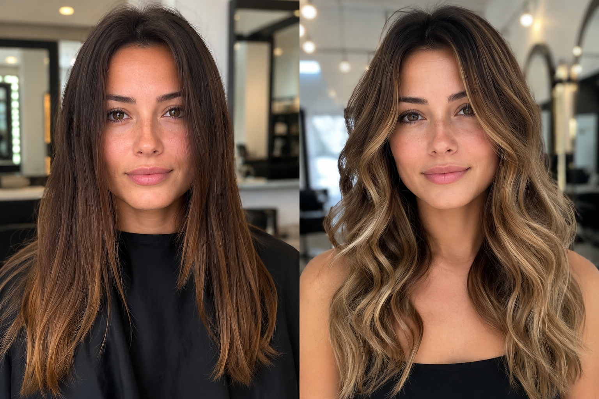
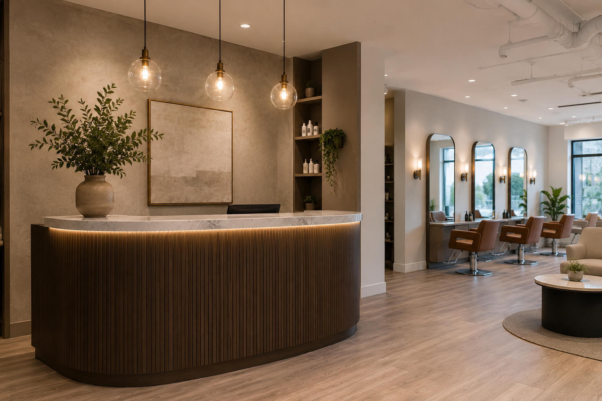

Cut and Shape
Consultation, custom cut, finish, and aftercare notes.
Custom quote
A premium digital experience for salons and beauty studios with visual proof, service clarity, booking requests, WhatsApp handoff, and a soft FAQ assistant.

People do not book when the page feels vague. This layout makes services, outcomes, and next steps obvious without making the brand feel cheap.

Consultation, custom cut, finish, and aftercare notes.

Gloss, dimension, lived-in color, or root polish.

Trial styling, bridal prep, and camera-ready finishing.
Beautiful pages need more than a nice hero image. This experience combines reviews, team photos, service proof, and direct booking so the studio feels established.
The interactive comparison gives a beauty brand a polished way to show visual results without crowding the page.

Process ResultClick the image choices to preview how a client's page can show the studio, team, results, and reception experience.

Inquiry received. The request can be routed to email, Sheets, or a booking tool.
Testimonial-style content gives the page social proof while keeping the experience refined and uncluttered.
Back to showroom